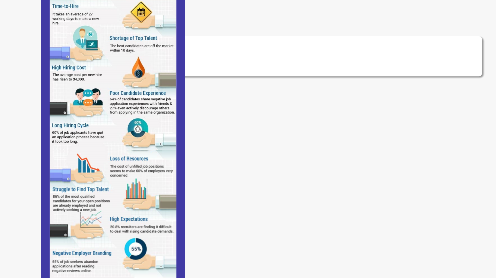

Skills is the currency of today’s economy
IYS enables maximize on skills
By�G�Ramu
By�G�Ramu
CEO,�IYS
IYS��Skills��Tech
Company Private�Limited,�Based�in�Chennai,�Office�in�the�US
Space HR,�Specifically�Skills�Management
Nature�of�Solutions Product,�Platform,�Enterprise�Application
Stage Products�live,�Revenue�Generating
Investment Self�Funded,�Investment�from�two�outside�Investors,�Funds�from�family�/�friends
Competition Very�little�or�nil
Market�Size HR�Tech�is�a�500�Bn�Dollar�company
Opportunity Software�As�A�Service�(SAAS)�is�hot,�HR�Tech�is�seeing�huge�investments,�Tremendous�
room�for�tech�enabled�innovation
Directors Two
Quick�Snapshot�of�IYS
Q
A
IYS�Skills�Tech�Vision
Be�THE�Global�Leader�in�skills�management�
enabling�Individuals,�businesses�and�
governments

Skills�challenges�and�market
Global�skills�management�software�
market�USD�381�and�expected�CAGR�
13%,�reaching�USD�800�Mn�in�2024
Lets�Take�Some�World�Challenges
CHALLENGES WHAT�NEEDS�TO�BE�DONE
Individuals�find�it�difficult�to�make�choices�
on�what�careers�they�should�take
Individuals�should�be�able�to�map�their�skills�well,�they�should�be�having�
data�on�what�skills�are�in�demand,�what�skills�are�likely�to�have�the�future
Individuals�in�companies�do�not�have�
clear�idea�of�their�future
Individual�should�be�able�to�map�their�skills�well,�they�should�have�data�on�
what�skills�are�required�in�different�jobs�within�the�company�or�in�their�areas�
in�the�market�
Companies�need�agility�to�respond�to�
competition
Skills�will�have�to�be�quickly�augmented�from�within�company�(preferably)�or�
from�outside�(on�short�term�or�long�term�basis)�to�cater�to�the�demands�of�
the�competitive�scenario�either�to�innovate�or�to�respond.
Governments�need�better�data�to�
channelize�nation’s�human�resource�
development
We�need�Big�Data�on�skills�from�different�sources�to�create�models�and�
predictive�analytics�so�that�Governments�can�channelize�resources�to�the�
right�efforts
What�are�the�Trends�
from�the�Businesses�around�Us
Simplicity Easy�to�use,�Minimum�steps,�instant�results
Eco-systems One�place�for�different�providers
SAAS Pay�per�use,�Pay�only�user�fee,�No�hassles�of�CAPEX
Global Think�global�clientele,�Solutions�that�can�scale,�Localization
Intelligent Personalized�Recommendations,�Insights�from�market,�profiling�of�person
Continuous�Innovation Constantly�improve�products,�deploy�emerging�technologies
Revenue�model Small�fees,�Attract�volumes,�generate�recurring�revenue
Now�To�The�Solutions�
From�IYS
Three�Interrelated�Solutions
Skills�
Taxonomy
Individuals�(B2C)�
Platform
Enterprise�(B2B)�
Applications
Skills�API
SOLUTIONS�that�combine�skills�
domain�expertise�and�cutting�edge�
technology�including�AI.�IYS�
leverages�opportunities�in�the�three�
segments
Skills�Profiler
IYS�Business�Line�1:�Skills�Taxonomy�/�Profiler
Constant�research�on�skills�(and�skills�Taxonomy).�AI�based�enrichment.
Offer�the�skills�taxonomy�for�others�to�use�in�their�applications.
Purpose�of�offering�Skills�Taxonomy:
Enrichment�
of�the�Skills�Taxonomy�
through�crowd�participation�
and�thus�strengthening�of�the�
leadership�position
Spreading�
of�the�brand�of�
IYS�and�thus�
attracting�more�
users
Garnering�
of�meta�data�on�
skills�for�skills�
intelligence�/�
analytics
No�1�Skills�Data
400,000�skills�terms�|�5,000�skills�groups�|�50,000�Occupations�/�Roles�|�
covering�34�functions�/�industries,�top�5�being�Information,�Healthcare,�
Education,�Engineering,�Finance�related
Target�Audience
HR�Tech�companies�like�HRIS�(example�Success�factors),�Job�Boards�
(Naukri),�LMS�(example:�Saba),�Recruitment�Systems�(eg:�Kennexa),�etc.
Illustration�of�the�solution
The�solution�i.e.�Skills�Taxonomy�API�is�like�the�Google�Maps�API
Google�Maps�is�very�basis�of�all�applications�that�are�location�based�like�
Uber,�Swiggy,�Amazon�etc.�
Google�Maps�get�paid�on�API�calls�and�also�keeps�garnering�meta�data�to�
build�intelligence
IYS�Business�Line�1:�Skills�Taxonomy�/�Profiler
Revenue�Model
Pay�for�use�i.e.�pay�for�the�number�of�API�calls�(in�simple�terms�how�many�
ever�times�the�skills�are�fetched)�and�per�API�call�is�around�0.02�USD.
So�a�customer�using�1�Mn�calls�will�pay�20,000K�USD
Competition
There�are�other�taxonomies�like�O*Net,�ESCO,�Burning�Glass�etc.�However,�no�
one�is�anywhere�close�to�IYS�Skills�Taxonomy�
IYS�Business�Line�1:�Skills�Taxonomy�/�Profiler
IYS�Business�Line�2:�
B2B�SAAS�Applications
Provide�end�to�end�skills�management�
application�for�enterprises�(B2B)�with�built�in�
skills�taxonomy
PURPOSE�OF�THE�APPLICATIONS:
There�is�a�gap�
in�the�HRIS�solutions�
on�skills�management�
and�thus�a�huge�
business�opportunity
Enablement�
of�Skills�
Taxonomy�
enrichment
SAAS�model�
Higher�sustained�
returns�from�the�
SAAS�model
IYS�Business�Line�2:�B2B�SAAS�Applications
What?
SAAS�Applications�for�Enterprises�around�“Skills”�such�as�
Employee�Skills�Management,�Candidates�Skills�Management
Target�Audience
Business�Organizations�across�industries�and�size
Functionalities
Job�Skills�Mapping;�Employee�Skills�Mapping;�Skills�Gap�Analysis,�Skills�
Deployment;�Skills
Purpose
Improve�skills�utilization�within�organization;�Avoid�unnecessary�hiring;�
Analyze�and�plan�better�on�skills�required�for�the�future�Personalization�and�
focused�development�plans;�Democratize�professional�enhancement;�
Reduce�recruitment�process�time;�
Improve�quality�of�recruitment;�Empower�Hiring�Managers�with�real�time�
hiring;�Alignment�between�business�goals�and�talent�strategy�/�plans
Revenue�Model
Pay�per�use�model�|�Freemium
Employee�Skills�Analytics�will�be�on�subscription�for�the�number�of�the�
employees�in�the�company�and�charged�the�annualized�subscription�upfront
Job�Skills�Profiles�will�be�charged�on�the�number�of�Skills�Profiles�created
Competition
There�are�a�few�players�like�muchskills.com�that�have�emerged�in�the�skills�
management�SAAS�space.�Then�there�are�new�generation�applications�like�
Darwinbox�which�offer�skills�management
IYS�Business�Line�2:�B2B�SAAS�Applications

IYS�Business�Line�3:�
B2C�Career�Platform
Provide�end�to�end�skills�management�application�for�
individuals�(B2C)�with�built�in�skills�taxonomy
Purpose�of�the�solutions
321
Pressing�Need
Fill�a�pressing�need�for�more�efficient�solution�for�individuals�
on�finding�jobs�and�fulfillment�of�development�needs
Skills�Analytics
based�recommendation�engine�plus�curation�of�opportunities�
on�jobs�and�learning�opportunities�to�improve�engagement
Pay�Off
Pay�off�on�investment�will�take�time�but�be�rewarding�
eventually
1
2
3
IYS�Business�Line�3:�B2C�Career�Platform
Target�Audience
Individuals�and�Students
Purpose
Enable�individuals�with�personalized�recommendations�on�skills�they�need�to�
develop;�create�opportunities�for�them�to�deploy�skills;�provide�avenues�for�
them�develop�their�skills
Offerings
Career�tips,�Career�enrichment�tools,�Market�insights,�Training�
recommendations,�Access�to�Training�Courses,�Access�to�Relevant�Jobs
Model
Do�everything�to�enrich�and�engage�individuals’�from�career�perspective
Build�eco-system�of�service�providers,�create�market�place�and�provide�
integrations
Revenue�Model
Based�on�profiles�consumed�by�others�(such�as�job�providers);�services�
providers�(such�as�assessors,�trainers)
Competition
Job�portals�like�Naukri,�Social�portals�like�Linkedin
However,�there�is�a�huge�opportunity�to�disrupt�this�market�by�focusing�on�
quality�mapping,�personalized�recommendations�and�bringing�services�to�
individuals
IYS�Business�Line�3:�B2C�Career�Platform

Summary�on�Revenue�
Models
HR�Tech�companies�/�Companies�using�HRIS,�LMS,�
Recruitment�Systems,�Job�portals
Revenue�from�Database�or�Skills�Taxonomy�API�or�
Skills�Profiler�plugin
Prepaid�model
Revenue�sources:�Skills�Data,�SAAS�applications
Companies�wanting�to�use�Employee�Skills�
Management�or�Candidate�Skills�Management�
applications
Based�on�number�of�employees�/�volume�used
Prepaid�model
IT�companies�/�HR�companies�taking�any�application�
on�white�label�model�with�skills�data�rendered�
through�our�API
One�time�sale�cost
Education�Institutions,�Training�Providers�etc.�can�use�
modified�version�of�Candidate�Skills�Management
Annual�Subscription�prepaid
Profile�publication Paid�by�individual -
Profile�view�after�search� Paid�by�company Individual
Profile�Assessed Paid�by�Individual Assessor�/�MySkillsplus
Feedback�given�/�Interview�
done
Paid�by�individual Feedback�giver�/�Interviewer
Training�leads Training�Provider Individual
Revenue�Sources:�Myskillsplus
Highly�Recommended�/�Disruptive�/�Lucrative
Tokenization,�Crypto,�where�the�tokens�are�traded�in�Crypto�exchanges
Thanks�You
IYS��Skills��Tech
Please�share�your�feedback�/�thoughts�–�
Please�share�your�feedback�/�thoughts�–�
gramu@itsyourskills.com
gramu@itsyourskills.com